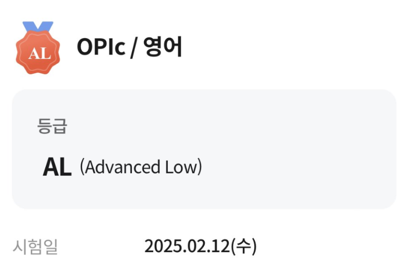
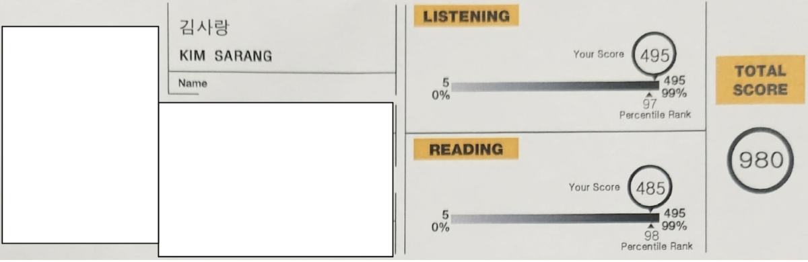

친한 언니가 졸업요건 중 영어 성적이 충족이 안되어 졸업을 못했다. 그래서 나한테 갑자기 같이 영어 공부를 하자고 했다. 어차피 토플을 보려고 했기때문에 수락을 했고 이제 약 한달째 공부를 하고 있다.
언니한테 왜 나한테 같이 공부를 하자고 했는지 물어봤는데 내가 언니 주변인들 중 제일 영어를 잘해서 본인한테 도움이 될 거 같았다고 했다. 솔직해서 웃겼고 좋게 봐줘서 고마웠다.
영어는 내가 디자인보다도 더 좋아해하고 더 잘한다. 어릴때 미국에서 살던 경험과 그 후로도 계속 영어 관련 활동을 많이 해서 생긴 자신감 덕분이다.
하지만 이렇게 말로 잘하기만 하면 도움이 되는게 하나도 없다. 실력을 증명할 수 있는 무언가가 필요하기 때문에 언니와의 스터디를 하면서 영어 시험 도장깨기를 한번 해보자고 마음 먹었다.
아래는 지금까지 본 시험들의 후기와 점수 / 그리고 볼 시험에 대한 이야기다.
성적 : AL
공부 기간 : 5일
공부 방법 : 인강
오픽은 ‘말하기’ 시험이다. 시험장에 가서 컴퓨터 앞에 앉아 문제를 듣고 그에 대해 답하는 식으로 시험이 진행된다. 결과는 등급으로 나오며 총 9개가 있다.
월드잡플러스라는 곳에서 인강을 봤다. 한국산업인력공단에서 운영하는 곳으로 토익, 오픽, 토플 등의 영어 시험 관련 인강 및 자료를 무료로 보고, 받아볼 수 있다.
2월 7일에 시험 신청을 하고 2월 12일에 시험을 보러가서 공부 기간은 총 5일정도였다. 첫째날에만 인강을 보고 나머지 4일동안은 기출 문제 자료를 보면서 예상 답안만 작성했다.
이 시험은 외워서 말하는 것 보다 자연스럽게 이야기하고 말하는게 중요해서 기출에 대한 예상 답안을 모두 작성하되 그걸 모두 외우지 않았다. 그냥 무엇에 대해 이야기할지 리스트를 작성하는 느낌으로 글을 적었고 ‘재밌는 이야기를 준비해간다’는 마음으로 소재나 주요 단어 위주로 나만의 이야기보따리를 만들었다.
문제가 총 14문제? 정도 있었던 것 같은데 시험 시간인 40분을 거의 꽉 채워서 마지막에 나갔다.
말하기 시험은 본 적 없었는데 첫 시험에 제일 높은 등급을 받아서 만족스러웠다.
성적 : 980
공부 기간 : X
공부 방법 : 문제집
문제집에 있는 실전 모의고사를 몇개 풀어보고 보러갔다. 시험은 LC / RC로 나누어져있고 개인적으로 엄청.. 지루하고 집중력이 필요한 시험이라고 생각한다.
성적 : X
공부 기간 : ~현재 준비 중
공부 방법 : 문제집
토플은 5월로 시험 신청을 해놓았다. Reading / Listening / Speaking / Writing 과목으로 이루어져있어 나와 종합적인 영어 수준을 알 수 있지 않을까 싶어 성적이 가장 궁금하다. 쓰기는 아직까지 평가받아본 적이 없어 제일 걱정이 되면서도 기대된다.